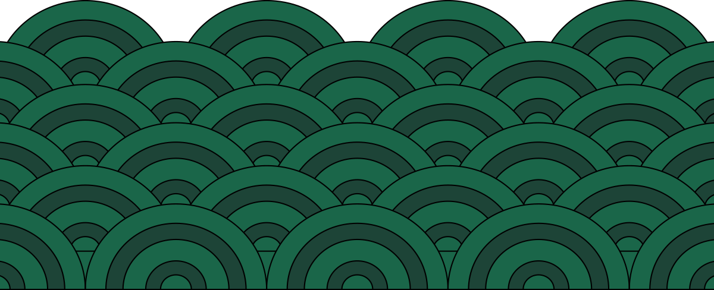
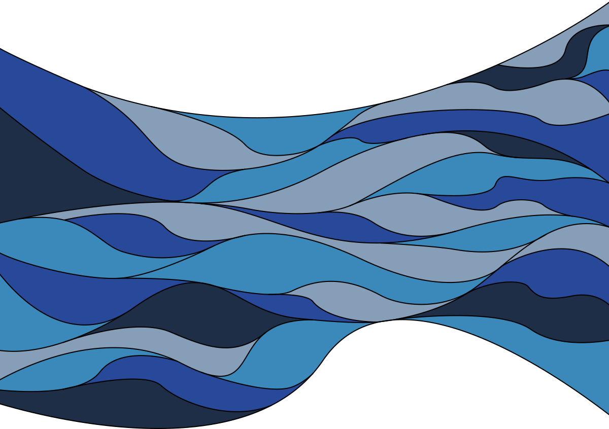
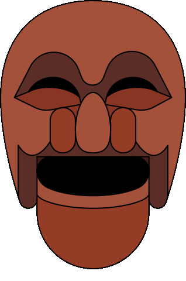
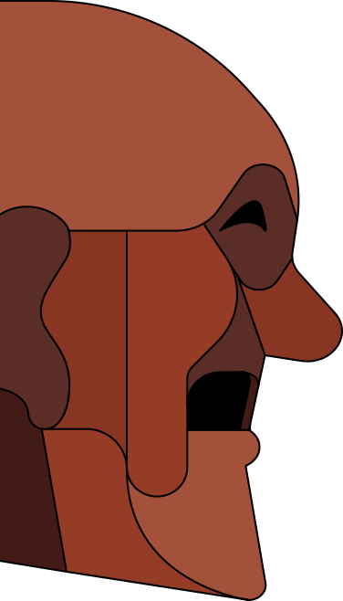
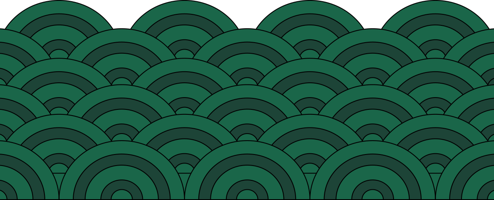
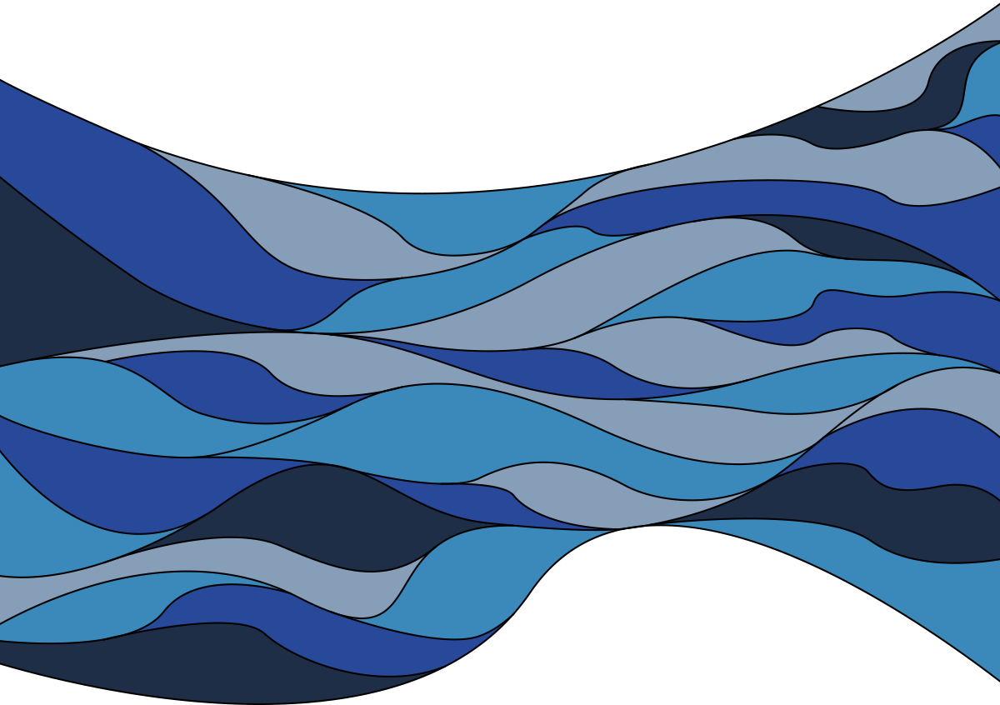
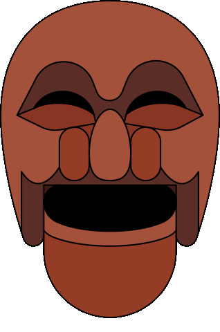
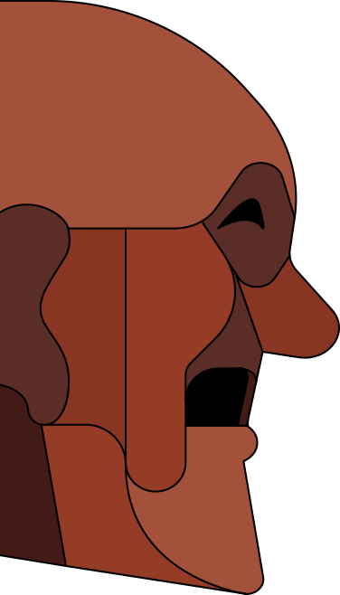
 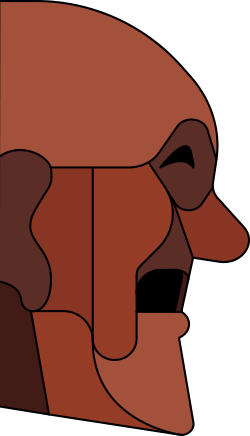
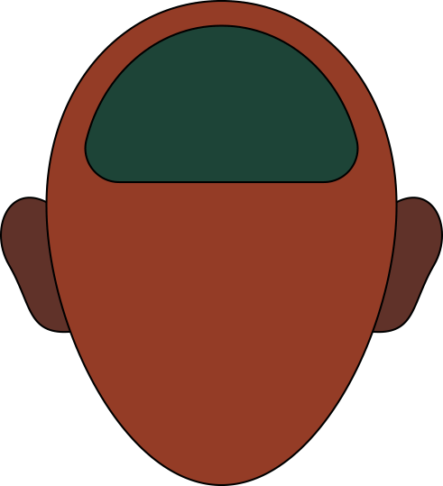
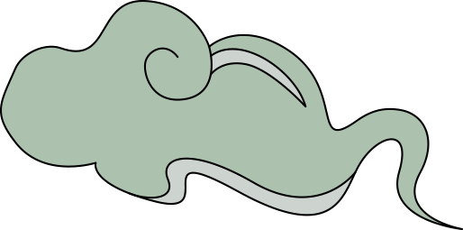
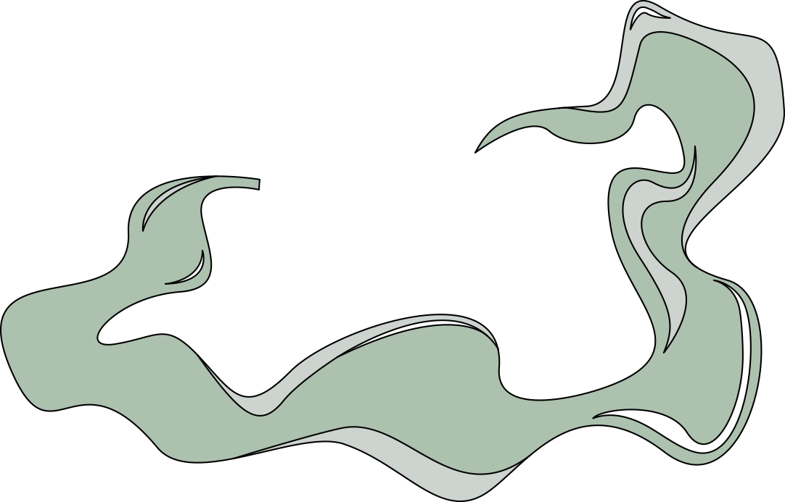
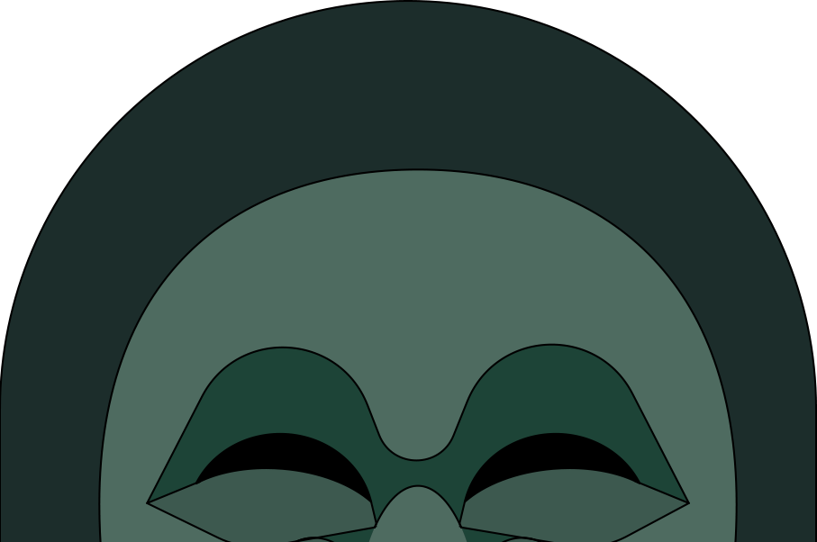
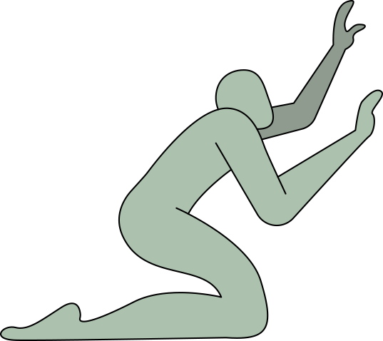
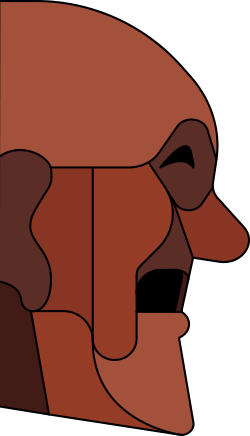
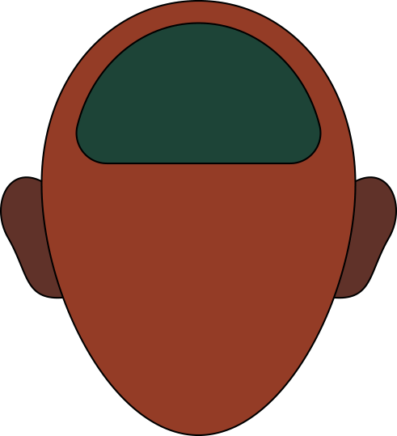
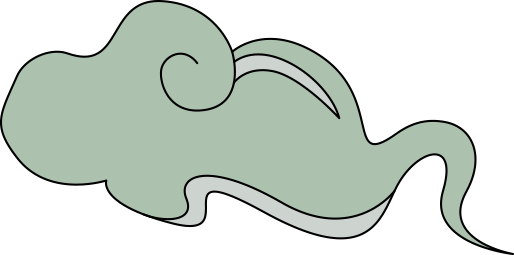
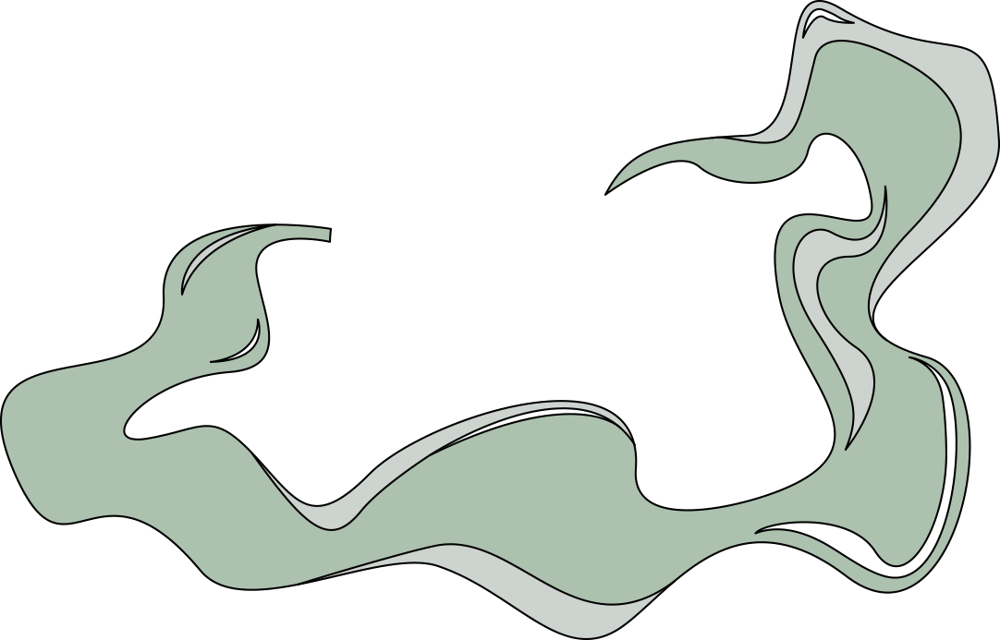
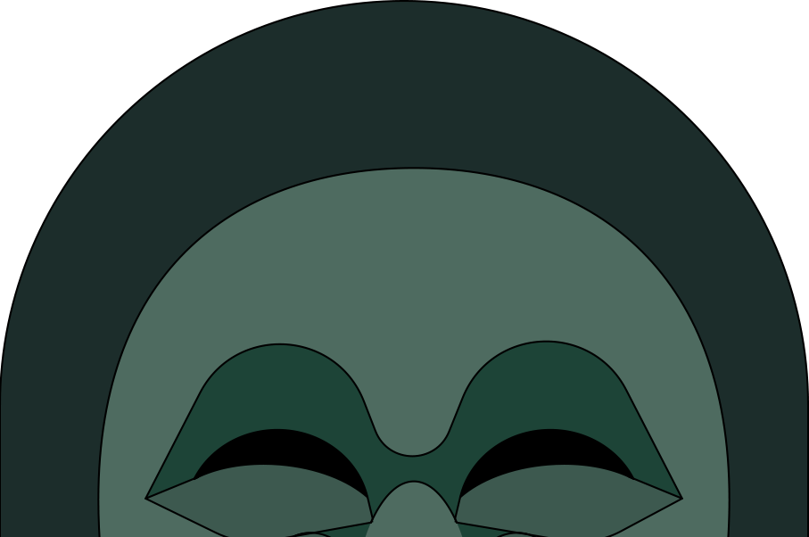
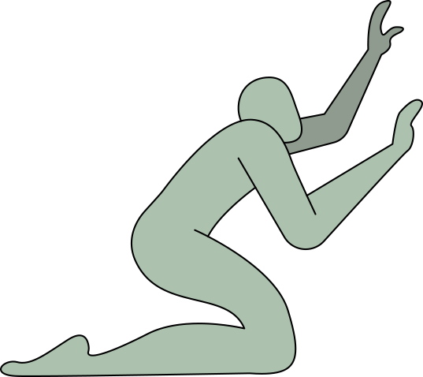
이건 며칠 전에 내 지인이 겪은 일인데..
지인이 집으로 돌아가는 길에서 길 맞은 편에 누군가가 서 있는걸 봤대. 그때 지인은 통화 중이었는데, 갑자기 “00아 할 말 있어.” “00아 할 말 있다니까?” “00아 내 말 좀 들어봐”라면서 그 사람이 쫓아오는거야.
자꾸 귀찮게 구니까 짜증이 확 나서 전화 끊고 뒤를 돌아봤는데 그 사람이 표정 하나 없이 입만 움직이고 있었대.
그걸 보니까 소름이 끼치는데 순간 생각해보니까
꽤 먼 거리인데도 그 사람이 말하는 소리가 너무 잘 들렸는데, 나랑 통화했던 사람은 말소리에 대한 말은 한마디도 안했다더라.
지인은 무서워서 빠른 걸음으로 걸었는데, 뒤에 발걸음 소리도 빨라지면서
"내가 너무 속상해서 그래." "나 너무 불행해" “내 말 듣기 싫어?”라고
자꾸 말거는거야. 진짜 너무 무서운데 소리도 못지르고 엄청 뛰었대.
근데 달릴 수록 발걸음 소리는 멀어지는데 목소리는 더 또렷하게 들렸다는거야. 마치 본인이 말하는 것 처럼.
“불행하니까 좋지?”
“불행하니까 좋지?”
“불행하니까 좋지?”
“불행하니까 좋지?”
속으로는 오만생각이 다 들었대.
‘어디까지 가야 목소리가 멈추지?’하고 생각하는데 마침 집에 도착해서 마지막 체력까지 다 쥐어 짜면서 집에 얼른 들어갔다더라.
지인은 그때 반응도 안해주고 도망친걸 다행으로 여기고 있대.
혹시 대답하거나 말을 들어줬음 어떤 일을 당했을지 상상도 하기 싫다고. 너도 조심해. 불행에 빠진 네 목소리에 귀 기울이면 큰일날걸?